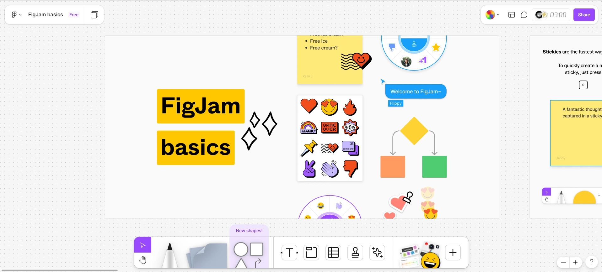
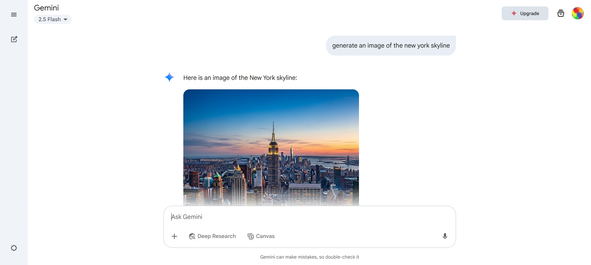
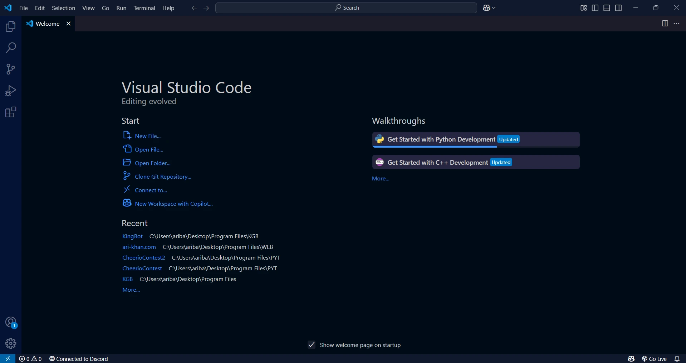
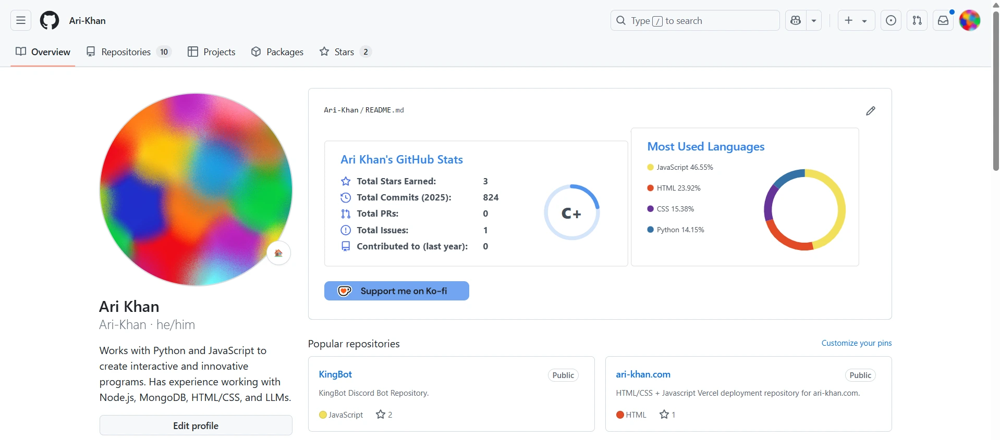
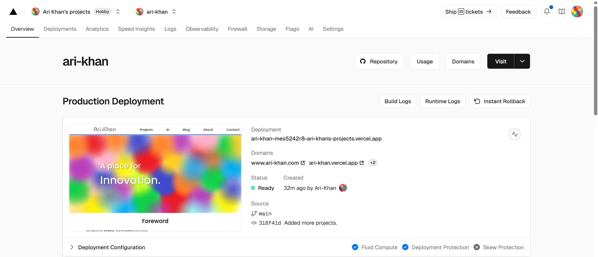

You've spent countless hours searching for free tools to develop your project, but they're either years out of date, as complex as C++ templates, or require "free credits" to access.
I can relate. For students exploring technology, it can be challenging to navigate through countless tools when outstanding resources are buried among less effective ones.
Fortunately, a handful of powerful platforms stand out for their usability, integration, and overall support for the creative development process.
1. Figma
Figma is a browser-based design tool used to create user interfaces, wireframes, and prototypes, without having to download anything. Figma can be used to develop blueprints of websites, software, or mobile applications before you are ready to transition to the development phase.
Its real-time collaboration features make it easy to work with classmates or receive feedback, and its simple interface helps students quickly visualize their ideas without needing programming experience.
Unlike Canva, which focuses on quick visuals and templates, Figma emphasizes structured design, prototyping, and teamwork.
Keep in mind that Figma cannot be used to publish websites or applications, and is mainly a tool for earlier stages in the design process.
2. Gemini
Often overlooked due to tools such as ChatGPT, Google Gemini serves as a powerful AI assistant capable of supporting tasks beyond simple conversation.
As of May 2025, Google Gemini 2.5 Pro is the top-ranked AI model in terms of versatility, linguistic precision, and cultural context.
Contrasting other platforms, Google Gemini allows you to generate an unlimited number of AI images for free, using Google's Imagen 3.
For developers, Google AI Studio allows you to integrate Google's AI models within your application through backend APIs. This could allow you to add AI features to your website or sort data in your applications using languages like Python or JavaScript.
3. Visual Studio Code
Frequently chosen by developers of all skill levels, Visual Studio Code is a lightweight yet powerful code editor trusted across industries.
Known for its speed, flexibility, and robust ecosystem, VS Code supports dozens of languages out of the box, from Python to TypeScript, and can be heavily customized to match any workflow.
VS Code can also be used to accelerate the development process through extensions. Extensions like Live Server let you preview your HTML and CSS designs in real time, without needing to redeploy your entire website after every change.
4. Github
GitHub is a web-based platform that allows developers to host, manage, and collaborate on code repositories using Git version control, without needing to install software locally. GitHub can be used to organize projects, track changes, and coordinate teamwork throughout the development lifecycle.
Its inferface makes it easy to control issues and share files, helping both beginners and experienced developers efficiently manage their code.
Actions in GitHub allow you to sit back and enjoy the product of your code without having to complete repetitive tasks. Automations like these help standardize the development process and reduce human-error within the development process.
5. Vercel
Vercel is a cloud platform that enables developers to deploy websites and web applications directly from their code repositories, without having to manually upload files. Vercel can be used to host static and dynamic sites, serverless functions, and full-stack applications with minimal configuration.
Insights allow you to track web performance in Vercel, while the console and documentation allow you to resolve issues efficiently.
Bear in mind that there is a moderate learning curve associated with Vercel, and it may be easier for new developers to host their websites on static hosts such as GitHub Pages.